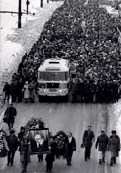

Борис Акунин
Мой календарь
В эту годовщину я всегда думаю о том, что было бы, если бы Андрей Дмитриевич не умер в 1989 году.
Тем, кто сегодня молод, трудно себе представить, как много значил этот человек, в одиночку боровшийся со стальной советской махиной и победивший ее. Господи, какое же это было грандиозное событие, когда властям пришлось его вернуть из ссылки! А в какой огромной очереди я стоял, когда перед выборами народных депутатов нужно было поставить подпись за этого кандидата! Лучшая очередь в моей жизни.
Этого мягкого, тихоголосого, картавого человека было не запугать и не сдвинуть. Он беспафосно и бесстрашно говорил то, что нужно сказать, двигался туда, куда нужно идти, и все, даже враги и последние скоты не могли не чувствовать его нравственной силы.
Я уверен, что, будь Андрей Дмитриевич жив в девяностые, не было бы ни октября 1993 года с пальбой по Белому Дому, ни Чеченской войны, ни позорной «коржаковщины». Ельцин просто не посмел бы самодурствовать и самодержавничать при живом Сахарове. Всё бы пошло по-другому, всё сложилось бы иначе.
Для того, чтобы личность сыграла роль в истории, не обязательно занимать высокий пост. Достаточно высоты духа.
Ах, Андрей Дмитриевич, как же вас все эти годы не хватало…